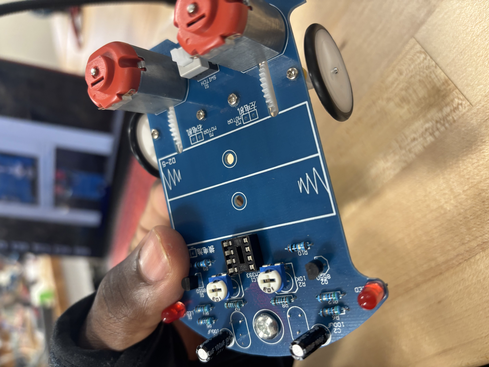
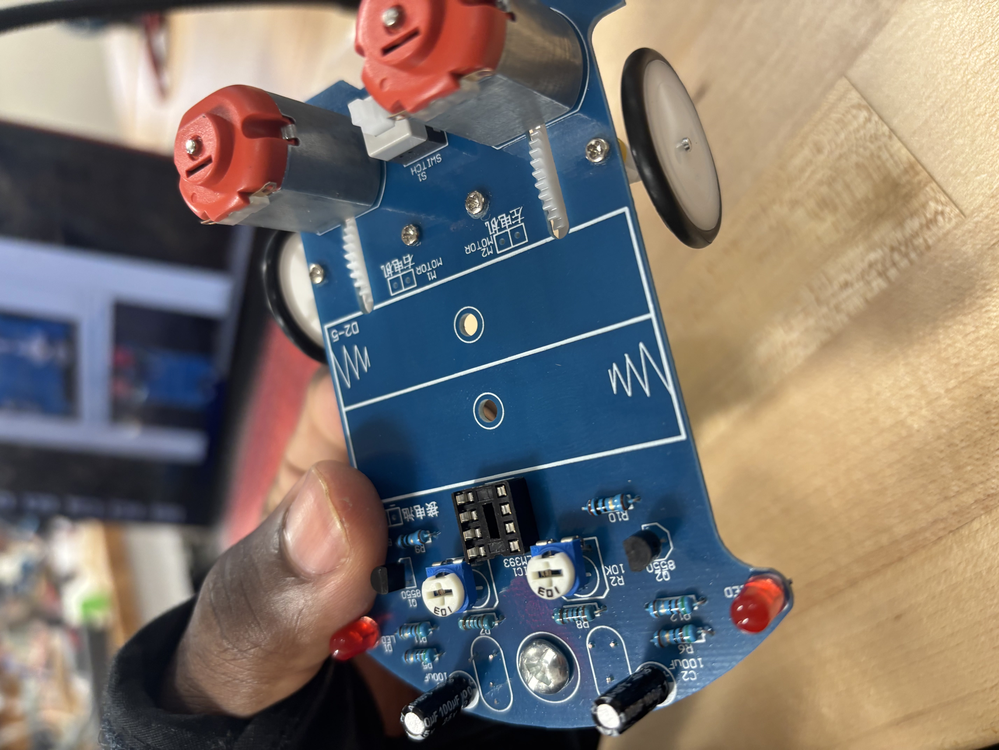

Instruction manual refleciton
Before starting the project, I first started by developing a reflection on the manual for the tracking car DIY kit. Upon reading the instruction manual, various challenges came to mind when constructing the Tracking Car DIY kit.
The first issue I feel will arise is with the photosensitivity sensors. They detect whether the car is driving on a white or black object, and how these sensors are soldered on can affect the car's driving ability. Also, this sensor signals to the motor to slow down, allowing the car to change direction. If the motor is not soldered on correctly in the example, if the copper wires are incorrectly attached to the printed circuit board(PCB) the motors will not have the proper power to drive the car correctly.
Another problem is the user-based skill issue when it comes to soldering parts onto the PCB. Those with more experience may have no trouble, but as someone who has never soldered before, I think the possibility for an incorrect solder is quite likely, as holding the iron onto the board for too long will cause damage to the components of the kit.
When reading through the pictures for installation, one difficult aspect that stuck out was the parts that act as dipoles (positive and negative charges). Examples of the parts are the LED and the Electrolytic capacitor. Improper soldering of these parts can lead to lack of functionality in those pieces of the kit.
Achieving an accurate height for the photoresistors seems to be another challenging aspect to the kit. Incorrect installation of the resistors can cause problems as the degree of resistance output is dependent on the amount of light and if they are too high or too low, it will cause improper signals to be sent to the PCB.
As I looked at the visual image of the finished kit towards the end of the manual, I noticed the close proximity of all the parts on the PCB. This can be problematic as having to closely solder these pieces it can result in an unwanted solder bridge.
Strengths of the manual
1) The manual provides a very detailed description of what the steps are to build the kit. The instructions are very clear and brief, which made assembly much easier for a beginner like myself. To assist in making the building of the kit easier, the installation tips section in the manual was very insightful. It provided tips on proper preparation for construction along with installation tips such as directionality to ensure proper function of the kit.
2) I found the install shown steps(XI) to be very helpful. This section of the manual provided step-by-step visual examples as to how installation is to be completed. These photos were close up and had high-quality resolution, so it was much easier to refer to than the installation steps with no photos.
3) To add to this point, although I preferred the steps with photos, the steps listed in the above section (VIII) did not skip steps. Essentially, what I mean by that is each piece of the kit had its own installation step as opposed to the manual putting multiple parts together into one step, making it more difficult to follow.
Weaknesses/ changes
To begin with, weaknesses of the manual, the complexity level for assembly is one challenge I faced. As someone who has never soldered before, the multitude of steps and the complexity of each one made the instructions a bit hard to follow.
I would change the manual by elaborating a bit more on some of the more intricate steps, such as soldering on the motors. If they could break up the larger steps into smaller, simpler ones, especially for the important components, it would make assembly much easier.
Another weakness is the minimal instruction for further modification of the kit. I understand that it is for beginners, but I felt like there wasn’t any information on how to customize the car for more advanced modifications.
To change this weakness, I would add a link into the manual towards the end that redirects users to instructions for customization. The link would include info on how to modify the car so it can optimize performance in areas such as speed, more responsive sensors, etc.
Part 1: Robot Assembly
After critiquing the DIY manual, my partner and I decided that we would both work together on building one car in case anything went wrong, so we would essentially have a backup.
Importantly, before we started soldering the actual kit we practiced on a separate board to make sure we had the technique down. What I found to be extremely useful was a YouTube video on how to Solde,r which recommended holding the soldering iron to the board for about 3 seconds before releasing. Not only did this allow the solder to get to the perfect temperature, but it also ensured that we did not fry the electronics on the board.
Step 1: To begin constructing the car, we started by installing the 4 metal film resistances at positions (R5, R6, R11, and R12).
Step 2: The 2 metal film resistors were placed and soldered onto positions R9 and R10.
Step 3: 2x 1k metal film resistors set in place at R7 and R8.
Step 4: DIP-8 IC socket was placed in its respective position.
Step 5: (2x) Transistors installed at Q1 and Q2.
Step 7: (2x) Red LEDs are installed at D1 and D2. For this step it was crucial to have the pins in their proper position according to their charge (positive or negative) to ensure proper operation.
Step 8: (2x) potentiometers installed at R1 and R2.
Step 9: (2x) Electrolytic Capacitors installed at C1 and C2. At this point in the installation process, soldering without creating bridges was becoming increasingly difficult as the pieces were getting closer together in terms of installation. To combat this issue, we enacted a method of bending the wires in opposite directions to provide more surface area for proper soldering.
Step 10: Self locking switch(button) installed at S1.
Step 11: (2x) Photoresistors installed at R13 and R14 on the bottom of the printed circuit board(PCB). To ensure a proper height of 5mm for the resistors, we utilized the digital caliper measurement tool to get a close approximation.
Step 12: (2x) white LEDs installed at D4 and D5, a caliper was again used to measure a height of around 14mm for the lights.
Step 13: Support screw, nut, and cap installed at the forefront of the board.
Step 14: (4x) yellow gaskets and screws fastend onto the PCB. This was another area of struggle for us as the gaskets were extremely hard to get on. We eventually figured out a method that worked best which involved pliers to screw on the gaskets properly.
Steps 15-21: The wheels for the car were assembled.
Step 22: (2x) DC motors installed in positions M1 and M2 and secured with 4 motor screws.
Step 23: (2x) worms installed on motor shaft.
Step 25: Wheel alignment onto the yellow gaskets. This step became a bit complicated as a soldering error caused problems after the car was completed. When soldering, my partner accidentally touched the iron to the wheel of the car, causing it to melt. This resulted in improper function of the gear as it was unable to complete a full circular cycle due to the melted section. To resolve this problem, we took the gear from our other kit, replacing it with the old one, and the car then began to function as normal.
Step 26: (2x) motors were connected through (4x) cables onto the PCB. We paid close attention to the coloration of the wires we connected as the manual warned of improper installation causing abnormal function.
Step 27: Battery case was installed centrally to the kit.
Step 29: DIP-8 LM393 was installed at IC socket.
Step 30: (2x) Batteries were inserted to the battery pack and the kit was turned on.
After the car was successfully assembled, we used the caliper to take measurements of the car and recorded them in a table to assist us in the next step of the process, which was designing a chassis for the kit in Autodesk Fusion.
Kit reflection
Our car worked very well and I feel as though a lot of that is attributed to the careful installation approach that my partner and I took. Not only did we read through the instructions thoroughly, but we also made sure to take our time on each step, not rushingto prevent errors in the long run.

 
